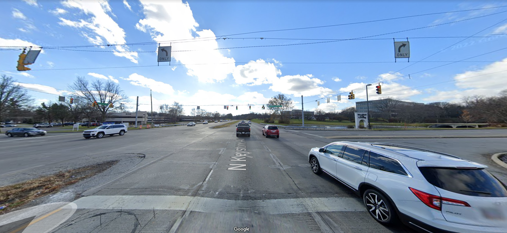

Let's fix this signal!
Keystone @ Woodfield Crossing Blvd

To get this signal fixed, we need you to complain!
You can do this on RequestIndy by following the instructions below (<5 minutes).
Please don't do this while driving!
-
to copy the following message:
- Remember the following: 8401 N Keystone
- Go to RequestIndy
- Grant location permission, or enter the address above, and select the first option, 8401 N Keystone Ave
- Click Accept
- Click Next
- Select Maintenance on an existing traffic signal
- Select Traffic light
- Select the last option, Synchronization/Timing is off
- Select your direction of travel (or unknown if you aren't sure)
- Paste the message into Additional Information
- Click Next
- Enter your name, and email/phone in the form
- Click Next
- Click Submit
Thanks for your help!
For questions, comments, or concerns, please email signal@benscholer.com